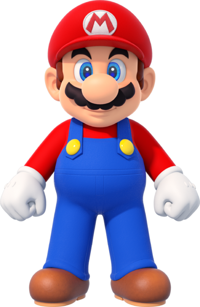
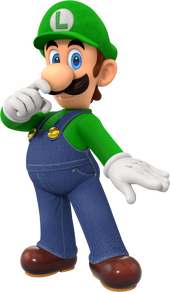

Mario
Mario is a character created by the Japanese game designer Shigeru Miyamoto. He is the star of the Mario franchise, a recurring character in the Donkey Kong franchise, and the mascot of the Japanese video game company Nintendo.

Luigi is Mario's younger but taller twin brother, the secondary protagonist of the Super Mario franchise, and the main protagonist of the Luigi's Mansion series. Throughout his life, he has lived in Mario's shadow, developing both cowardly and heroic tendencies. Despite this, Luigi has helped and fought alongside his brother on many occasions.
The above text is from the Super Mario Wiki and is available under a Creative Commons license. Attribution must be provided through a list of authors or a link back to the original article. Source: https://www.mariowiki.com/Luigi